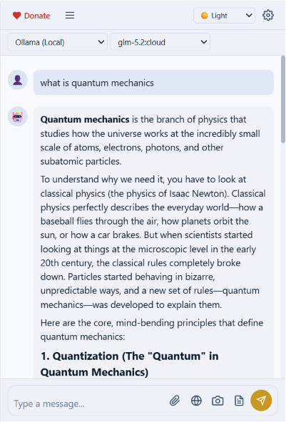

Bring Your Own Key
Use your own API keys from OpenAI, Anthropic, or Google. Your keys stay on your device — we never see them.
Bring your own API key. Choose your provider. Keep your data private. No tracking, no middleman — just you and the AI.

Powerful features designed for privacy-conscious users who want full control over their AI experience.
Use your own API keys from OpenAI, Anthropic, or Google. Your keys stay on your device — we never see them.
Watch AI responses appear in real-time with token-by-token streaming. No waiting for the full response.
Grab the current tab and send it to vision-capable models like GPT-5.5, Claude Sonnet 4.6, or Gemini.
Attach the current page's title, URL, selected text, and content to your message for context-aware conversations.
Create, switch, delete, and search conversations. Edit messages, regenerate responses, and export to JSON or Markdown.
Select any text on a webpage, right-click, and choose "Send to AI Chat" for instant context-aware responses.
Dark, Light, Midnight, Forest, and Sunset themes with syntax-highlighted code blocks. Your eyes will thank you.
No analytics, no telemetry, no tracking. Your conversations and API keys stay on your device. Period.
Choose your favorite AI model — or use them all. Switch providers instantly without leaving the chat.
GPT-5.5, GPT-5.4, GPT-5.4 mini, and more. The industry standard for AI chat.
Claude Fable 5, Claude Opus 4.8, Claude Sonnet 4.6, and more. Thoughtful, nuanced responses.
Gemini 3.5 Flash, Gemini 3.1 Pro, Gemini 2.5 Pro, and more. Google's powerful multimodal AI.
Run models locally — Llama, Mistral, Phi, and more. No API key needed. 100% private.
Local model server with a beautiful UI. No API key needed. Runs on your machine.
Connect to any OpenAI-compatible endpoint — vLLM, Together AI, Groq, OpenRouter, and more.
Three simple steps to start chatting with any AI model.
Add BYOK AI Chat to Chrome from the Web Store. Click the icon or press Ctrl+Shift+K to open the side panel.
Open Settings, pick a provider (OpenAI, Anthropic, Google, Ollama, LM Studio, or Custom), and paste your API key. Click Test to verify.
Type your message and get instant streaming responses. Attach screenshots, page context, or files for richer conversations.
BYOK AI Chat is built with privacy as a core principle. No analytics, no telemetry, no tracking. Your API keys and conversations are stored locally on your device. Messages go directly from your browser to the AI provider you choose — no middleman, no data collection.
Everything you need to know about BYOK AI Chat.
BYOK stands for Bring Your Own Key. You provide your own API key for the AI provider you want to use (OpenAI, Anthropic, Google). The extension never sees, stores, or proxies your keys — they stay on your device.
Yes, the extension is completely free. You only pay for the AI provider API calls you make with your own key. If you use local providers like Ollama or LM Studio, there are no costs at all.
Absolutely. BYOK AI Chat collects no analytics, no telemetry, and no tracking data. Your API keys and conversations are stored locally on your device. Messages are sent directly from your browser to the AI provider you choose — no middleman.
Yes! BYOK AI Chat supports Ollama and LM Studio for running models locally. No API key is needed — just point the extension at your local server and start chatting. All data stays on your machine.
BYOK AI Chat supports 6 providers:
For local providers like Ollama and LM Studio, no API key is needed — just point the extension at your local server.
The Custom API option lets you connect to any OpenAI-compatible endpoint. This includes services like vLLM, Together AI, Groq, OpenRouter, and more. Just enter the base URL and your API key, and you're good to go.
Yes! Click the camera icon in the input area to capture the current tab. The screenshot is sent as an image attachment to vision-capable models like GPT-5.5, Claude Sonnet 4.6, and Gemini.
Install BYOK AI Chat for free and start chatting with OpenAI, Anthropic, Google, Ollama, LM Studio, or any custom endpoint.